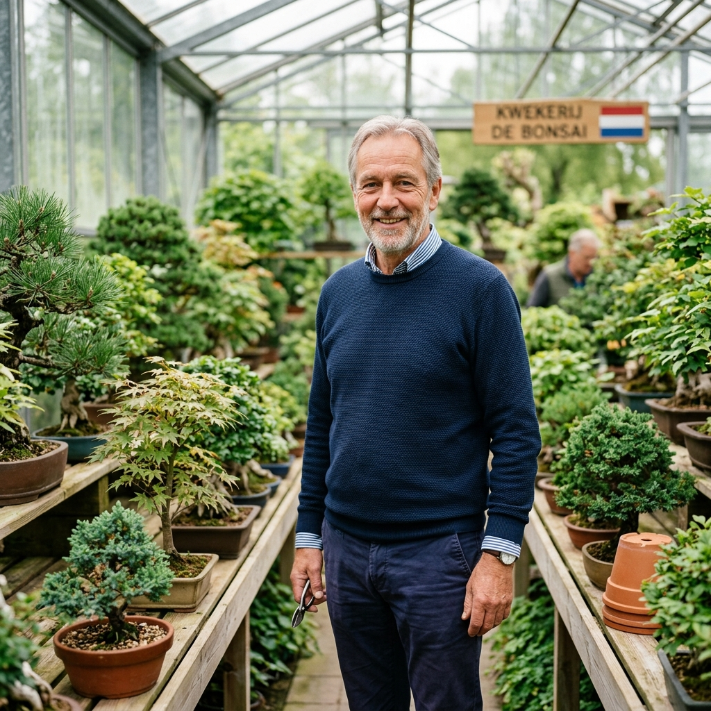
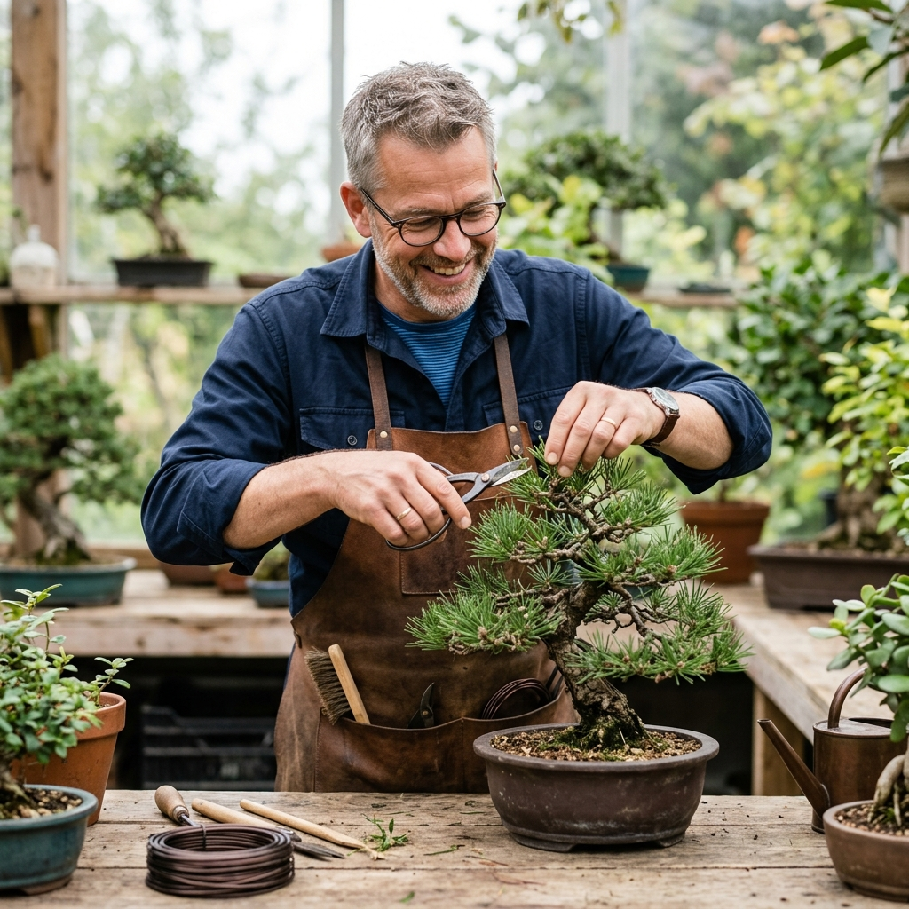
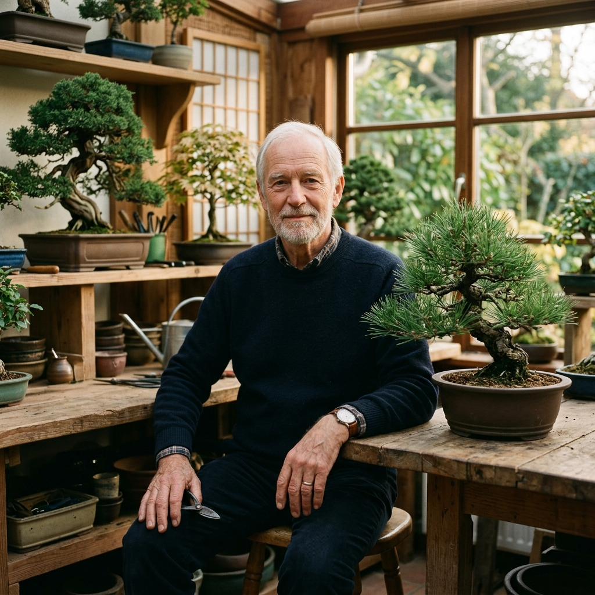

Een vereniging met wortels
Bonsai Vereniging Brabant (BVB) is dé plek waar de passie voor de kunst van bonsai en Brabantse gezelligheid samenkomen.
Al jarenlang vormen we een hechte gemeenschap van liefhebbers in de regio. Onze clubavonden in Berlicum zijn de kern van de vereniging: hier delen we kennis, helpen we elkaar met het vormgeven van bomen en vieren we onze gedeelde hobby onder het genot van een goed gesprek.
Van beginners die hun eerste stappen zetten tot ervaren rotten in het vak; bij BVB schuif je gewoon aan. Onze missie is om de kunst van bonsai toegankelijk te maken en op een hoog niveau te beoefenen, zonder de Brabantse gemoedelijkheid uit het oog te verliezen.
Onze Ereleden
Zonder de inzet en visie van deze bijzondere mensen zou BVB niet zijn wat het vandaag is. Wij danken hen voor hun jarenlange toewijding.

Pieter van Uden
"Pionier en vakman. Als oprichter van Holland Bonsai heeft Pieter een onuitwisbare stempel gedrukt op de bonsaisport in onze regio. Zijn kennis en passie zijn een inspiratie voor velen."

Bart Verstappen
"Meester in structuur. Bart staat bekend om zijn diepgaande kennis van loofbomen en zijn vermogen om complexe technieken helder over te dragen tijdens demonstraties en workshops."

Gijs Meboer
"De stem van ervaring. Gijs deelt al tientallen jaren zijn expertise vanuit zijn studio en is een rustpunt vol wijsheid binnen onze vereniging."